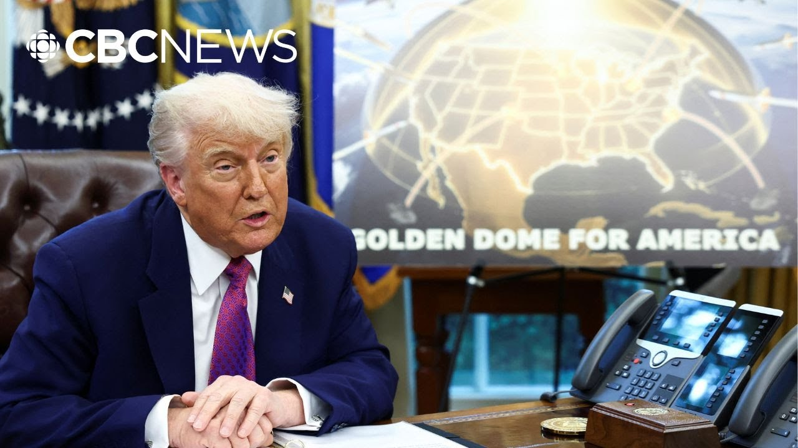

【渥太华确认对美国“金穹”导弹防御提案感兴趣】
Summary: Canada is discussing participation in Trump's Golden Dome missile defense system, which aims to intercept global or space-launched missiles. Ottawa acknowledges the need for involvement due to Canadian airspace but faces budget and feasibility uncertainties amid evolving threats and linked economic-military strategies.
摘要： 加拿大正就参与特朗普的“金穹”导弹防御系统进行讨论，该系统旨在拦截来自全球或太空的导弹。渥太华承认因加拿大领空需参与其中，但在预算和可行性方面存在不确定性，同时面临不断变化的威胁及经济-军事战略挂钩问题。

⏱️ Estimated Reading Time: 9 min
The prime minister's office is confirming Canada is in discussions to take part in Donald Trump's Golden Dome missile defense system.
总理办公室证实加拿大正参与讨论加入特朗普的“金穹”导弹防御系统。
It's a system the US president says will intercept any missiles launched from the other side of the world or from space.
美国总统称该系统将拦截来自世界另一端或太空发射的任何导弹。
Trump says it makes sense to include Canada in that system, but Canada would pay its fair share.
特朗普表示将加拿大纳入该系统是合理的，但加拿大需承担其相应份额的费用。
So for more on this, I'm joined by the CBC's Janice McGregor in Ottawa.
为此，我们连线了CBC驻渥太华的记者贾妮斯·麦格雷戈。
Janice, how and why would Canada agree to Donald Trump's plan here?
贾妮斯，加拿大将如何以及为何同意特朗普的这一计划？
Yeah, and indeed, you know, Donald Trump really likes to keep people sort of a little bit offguard.
是的，实际上，你知道特朗普总喜欢让人措手不及。
So there he was, sort of element of surprise yesterday in the Oval Office.
昨天他在椭圆办公室的举动就带着这种出其不意的意味。
Normally, if you were going to announce a significant step in terms of modernizing NORAD and having a new partnership on air defense, you would want to have your NORAD partner very much a part of that.
通常，若宣布北美防空司令部的现代化升级或新的防空合作这类重大举措，你会希望北美防空伙伴全程参与。
But nevertheless, there he was in the Oval Office yesterday spouting off about this notion.
但昨天他却在椭圆办公室独自宣扬这一构想。
Mind you, he had signed an executive order back in January authorizing a mandate for creating a so-called Iron Dome.
需注意的是，他早在1月就签署行政令授权建立所谓的“铁穹”系统。
It's since been recristened the Golden Dome over the US and also in so discussing that concept he was acknowledging that you know in between Alaska and the rest of the US is a whole lot of Canadian airspace and Canadian jurisdiction.
此后该项目更名为“金穹”，他在讨论时也承认阿拉斯加与美国本土间存在大量加拿大领空和管辖区域。
So it only makes sense perhaps that Ottawa is going to have to be involved.
因此渥太华的参与或许是必然的。
We'll be discussing Canada.
我们将讨论加拿大。
They want to hook in and they want to see if they can be a part of it.
他们希望接入并确认能否参与其中。
That sort of makes sense.
这有一定合理性。
I guess that's what I was talking about from day one.
我想这正是我一贯强调的。
You know, it just automatically makes sense and it won't be very difficult to do, but they'll pay their fair share.
这自然合乎逻辑且实施不难，但他们需承担相应费用。
What we don't know is whether this is just kind of a notion that lives in Donald Trump's head or whether we are moving towards something that is at a stage where you would be practically looking at some plans moving towards procurement.
不确定这仅是特朗普的个人想法，还是已进入实际采购计划的阶段。
It is not clear that any of that is ready or even that this is something that could be completed within sort of the mandate of the US president's time in office.
尚不清楚相关准备是否就绪，或能否在特朗普任期内完成。
This is not a new idea.
这并非新构想。
The idea of joint continental missile defense came up for example in the 90s in the early as the Martin government back in the day faced some friction with the Bush administration for not being willing to participate at that point.
例如90年代就提出过联合大陆导弹防御，当时马丁政府因不愿参与而与布什政府产生摩擦。
But of course the threats now have changed.
但如今威胁态势已变。
Russian aggression, Chinese aggression, also a Trump administration that seems very much to want to link its economic tariff strategy to whether or not countries are cooperating militarily with US goals.
俄罗斯与中国的挑衅，以及特朗普政府似乎极力将经济关税战略与各国是否配合美国军事目标挂钩。
Trump is very enamored with the idea that Israel has a kind of this domelike protection over its territory.
特朗普对以色列的“穹顶”领土保护概念极为推崇。
But we are talking here about geography that is magnitudes times bigger.
但我们现在讨论的是规模大得多的地理范围。
Which is why this is magnitudes times bigger of a challenge for the militaries to even try to execute.
正因如此，这对军方执行而言是几何级数增长的挑战。
Nevertheless, this was the statement we got from the prime minister's office that Canadians gave the prime minister a mandate to be negotiating a new security and economic relationship.
不过总理办公室声明称，加拿大民众授权总理谈判新的安全经济关系。
That they have had wide-ranging and constructive discussions with counterparts and acknowledging that this includes strengthening NORAD and initiatives like the Golden Dome.
他们已与各方进行广泛建设性讨论，承认包括强化北美防空司令部和“金穹”等计划。
So, it has come up apparently this seems to be linked to the negotiations we know are going to unfold over the next couple weeks towards this trade, economic and security partnership that they're starting to message about.
显然这与未来几周将展开的贸易、经济和安全伙伴关系谈判相关。
But we know also that former defense minister Bill Blair was in Washington did signal that Canada would participate in some kind of a system to detect incoming threats to the continent.
但前国防部长比尔·布莱尔在华盛顿时已示意加拿大将参与某种大陆威胁探测系统。
This in the context of the need to modernize NATO, the need to coordinate continental defense against cruise missile or other aerial attacks.
背景是北约现代化需求及协调应对巡航导弹等空中攻击的大陆防御需求。
Blair apparently has said that this only makes sense.
布莱尔明确表示这是合理之举。
A US general though that spoke at a military conference in Ottawa recently suggested Canada's role might be mostly about sort of what they call the sensor detection system.
但近期渥太华军事会议上，一位美国将军暗示加拿大角色可能主要是传感器探测系统。
Not so much that Canada would fire the interceptor missiles to confront the attacker, but that it would be part of, if you will, the early warning system to see the threats as they're coming over.
加拿大未必发射拦截导弹，而是作为预警系统组成部分监测来袭威胁。
And then in terms of budget planning, where does all of this fit in Janet?
那么预算规划方面，这些将如何安排？
Yeah, because this hasn't even been properly costed in the US, let alone in Canada.
是的，美国尚未准确核算成本，更不用说加拿大。
And we could be talking about hundreds of billions of dollars in terms of the American spend.
美国投入可能高达数千亿美元。
So, if Trump is talking about Canada being involved in the pricing for that, this really would be looking at something that could be an absolute budget buster for Ottawa.
若特朗普要求加拿大分摊费用，这对渥太华财政可能是毁灭性打击。
Prime Minister Mark Carney said on Sunday that the uncertainty over how much more Canada's going to have to spend on military contributions is one of the reasons why they're delaying the federal budget until the fall.
总理马克·卡尼周日称，军费增额不确定是推迟秋季公布联邦预算的原因之一。
There is not much value in trying to rush through a budget in a very narrow window, 3 weeks with a new cabinet, effectively a new finance minister, just reappointed, but a new finance minister.
在三周内仓促通过预算价值有限——新内阁刚就任，财长虽属连任但实质是新财长。
Rush that through for example in advance of the NATO summit which happens after parliament rises.
比如在议会休会后的北约峰会前仓促通过预算。
So the NATO summit 23rd 24th that is going to be a very important event we are launching that set those set of initiatives having greater visibility on that as we prepare a budget.
因此23-24日的北约峰会将是重要节点，我们在筹备预算时需更清晰把握这些倡议。
All of those three factors, so defense spending, the economic outlook, including the tariff relationship with the United States and the efficiency, all of those coming together, we will have a much more comprehensive, effective, ambitious, prudent budget in the fall.
国防开支、对美关税关系等经济前景及效率这三要素结合，秋季预算将更全面、有效、进取且审慎。
So, we know that Canada is trying to move up its military spending to try to meet that 2% of GDP NATO target earlier than it previously said.
加拿大正加速军费开支以提前达到北约2%GDP目标。
Officials have also hinted though that that NATO target might be going up simultaneous to that.
官员还暗示北约目标可能同步上调。
Trump has accused Canada of being a free rider off of its military protection because the economic and trade conversation is now very linked.
特朗普指责加拿大搭军事保护便车，因经贸对话现已紧密挂钩。
You probably have a situation where two things are simultaneously true.
当前可能同时存在两种事实。
Canada's fiscal situation is such that yes, it's going to be a real stretch to start spending a lot more on its military, but also its economic and trade relationships are such that it probably can't afford not to participate in this.
加拿大财政确实难以大幅增加军费，但经贸关系又使其不得不参与。
Thanks for this, Janice.
谢谢贾妮斯。
That is the CBC's Janice McGregor in Ottawa.
这里是CBC驻渥太华记者贾妮斯·麦格雷戈的报道。